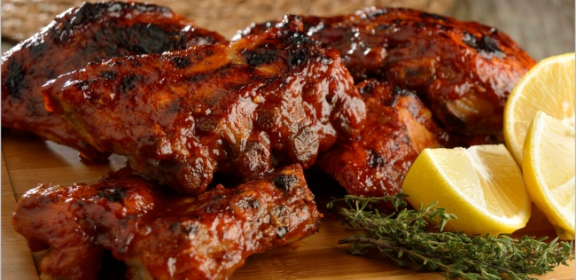

COSTILLITAS DE CERDO EN SALSA CREMOSA DE MORITA
Ingredientes:
Receta:
- 1 1/2 kilos de costilla de cerdo
- 1 cucharada de sal
- 2 cucharadas de pimentón ahumado
- 1 cucharada de pimienta cayena
- 1/2 taza de aceite de oliva
- 1/4 de taza de ajo finamente picado
- 2 cucharadas de aceite
- 1 pieza de cebolla en cubos, para la salsa
- 2 dientes de ajo para la salsa
- 10 piezas de chile morita para la salsa
- 1 cucharada de pimienta gorda para la salsa
- 4 piezas de jitomate cortados en cuartos, para la salsa
- 1 cucharadita de clavo para la salsa
- 1/4 de cucharadita de comino para la salsa
- 1 taza de tequila para marinada, para salsa
- 3 tazas de papa cambray cortadas por la mitad
- 2 cucharadas de mantequilla
- 1 taza de crema ácida
- 1 cucharadita de sal
- 1/4 de taza de cilantro picado
- Precalienta el horno a 230° C.
- Sobre una tabla coloca el costillar de cerdo y cubre con la sal, el pimentón ahumado,
la pimienta cayenne, el aceite de oliva y el ajo, reserva.
- Calienta una sartén grande a fuego alto, sella el costillar
por todos sus lados hasta que este doradito. Reserva.
- Para la salsa, calienta una ollita a fuego medio con aceite, agrega la cebolla,
el ajo, el chile morita, la pimienta gorda, el jitomate, el clavo y el comino.
Añade el tequila y cocina por 5 minutos más.
- Cocina los ingredientes de la sartén hasta que estén suaves y casi deshechos. Retira de cocción enfría ligeramente,
y licúa hasta obtener un adobito. Divide la preparación en dos.
- Sobre una charola con papel aluminio coloca el costillar de cerdo, barniza con la mitad de la salsa,
cubre bien con el papel aluminio. Acomoda las papas alrededor y baña con aceite de oliva, sal y pimienta a tu gusto.
Hornea durante 1 hora aproximadamente o hasta que las papas estén suaves y la carne cocida.
- Cuela la salsa restante y cocina en una olla a fuego medio con un poco de mantequilla.
Una vez que suelte el hervor agrega la crema, rectifica sazón y reserva.
- Sobre una tabla corta las costillitas, sirve con la salsa de morita y papitas rostizadas. Disfruta.
